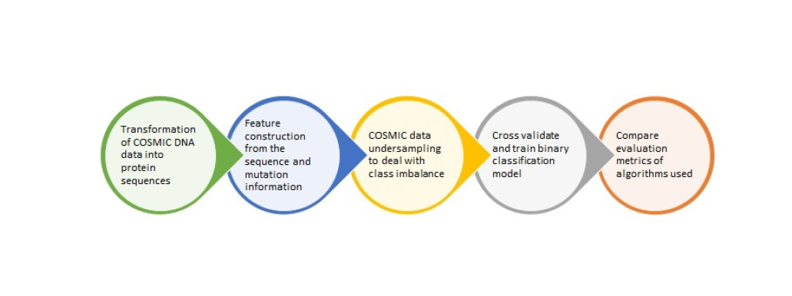
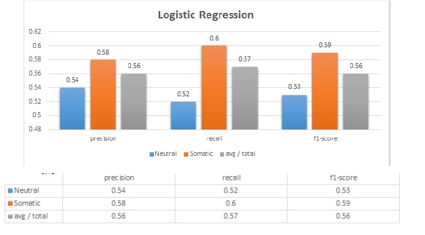
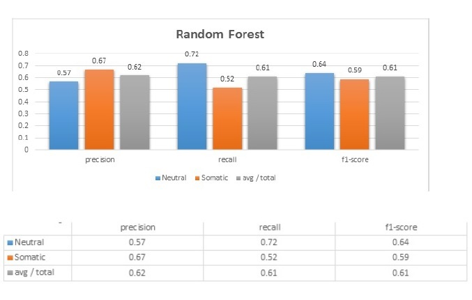
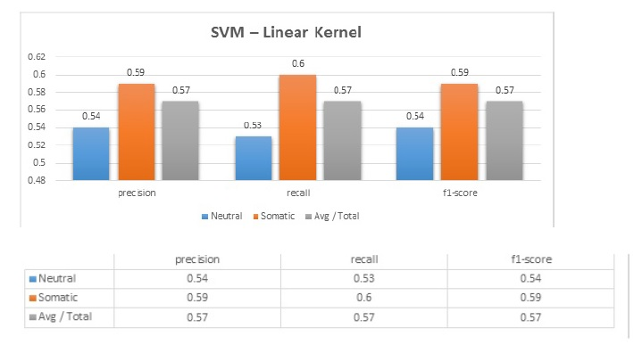

Since this was a critical project based on a medical domain it was very important for us to understand our objectives and have a clear outline of the areas that we would cover
View Project ProposalFlowchart
Logistic Regression
Random Forest
SVM -Linear Kernel
From the analysis that we carried out we were able to extract and summarize valuable inferences.
View Inferences reportThe dataset that was used was the COSMIC data that was available from COSMIC data research center. From the data that was got we were able to build a system that estimates somatic mutations. We were able to present our findings into a report.
View final report
Click on the below link to navigate to my GITHUB link
View GITHUB code